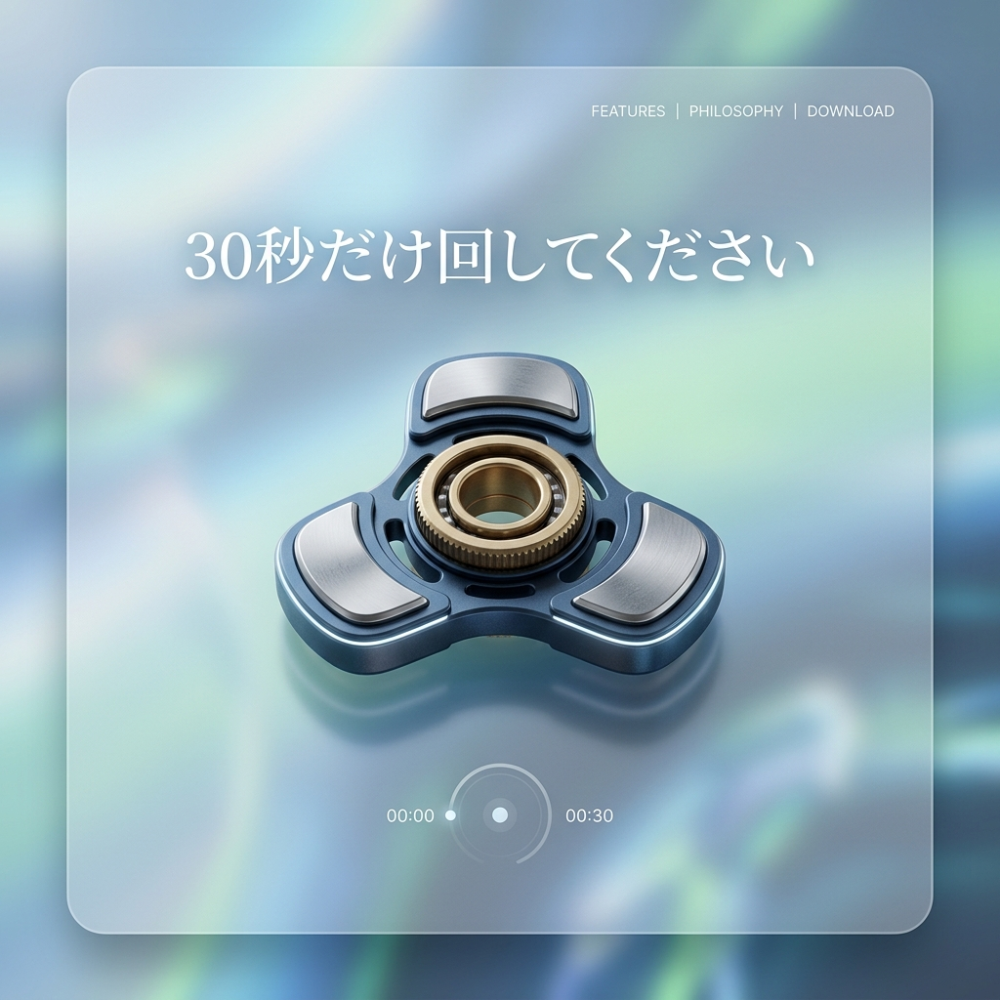

スマホに奪われた「意志」を、
強制的に取り戻す。
TikTok、YouTube、Instagram。無限スクロールがもたらすドーパミン中毒からあなたの脳を解放する。DOPAMINE-BRAKEは、脳波とスクリーンタイムを監視し、依存の兆候を検知した瞬間にデバイスを「物理的に沈黙」させるデジタル・デトックスAIです。

「Attention Economy」という合法的な搾取
シリコンバレーの天才たちが何十億ドルも投じて開発しているのは、「いかにあなたを画面に釘付けにするか」というアルゴリズムです。SNSの無限スクロールはスロットマシンと同じように脳の報酬系（ドーパミン）を刺激し、あなたの最も貴重な資産である「時間と集中力」を搾取し続けています。
依存を検知する「行動パターン解析」
スクロール速度の異常検知
「目的なくただ画面をスワイプし続けている」時の特有の指の速度とリズムをAIが検知。この状態（ゾンビ・スクロール）が3分続くとアラートを発動します。
アプリ間反復のトラッキング
Instagramを開き、何も見ずにXを開き、またInstagramに戻る。この「無意識のループ行動」を検知した瞬間に、両方のアプリに強制的な遅延（5秒間のローディング）を発生させ、我に返らせます。
バイオメトリクス連動
スマートウォッチの心拍変動（HRV）から「脳の疲労状態」を推測。疲れている時ほどSNSに依存しやすいため、その時間帯の利用制限を自動で厳しくします。
「見れない」のではなく「見えなくなる」魔法
単にアプリをロックするだけでは、イライラして解除してしまいます。DOPAMINE-BRAKEは制限時間を超えると、画面全体を鮮やかなフルカラーから「完全なモノクロ（白黒）」へと徐々にフェードアウトさせます。脳への視覚的刺激が激減し、自然とスマホを置きたくなる心理的なハックです。
取り戻した時間を可視化するダッシュボード
「今週、スマホを見なかったことで読書できた時間：4時間」「睡眠時間の増加：1.5時間」。制限によって『失ったもの』ではなく、現実世界で『得たもの』を美しく可視化し、デジタルデトックスのモチベーションを維持します。
Case Study | 慢性的な不眠に悩む20代
ベッドに入ってから2時間以上ショート動画を見てしまい、日中のパフォーマンスが著しく低下していたユーザー。就寝1時間前に「ドーパミン・ブレーキ」が作動するよう設定したところ、モノクロ化された画面に興味を失い、入眠までの時間が平均15分へと劇的に改善しました。
テクノロジーを、人間の「道具」に戻す
私たちはスマートフォンを否定しているわけではありません。ただ、デバイスの「奴隷」から「主人」へと主従関係を逆転させるだけです。取り戻した時間で、あなたが本当に愛することをしてください。